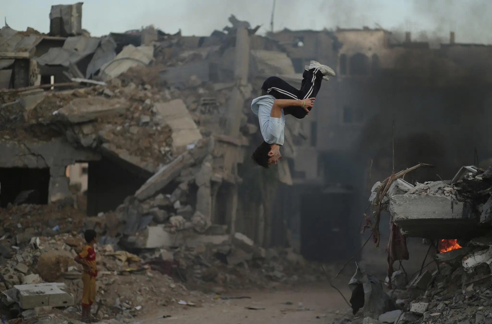
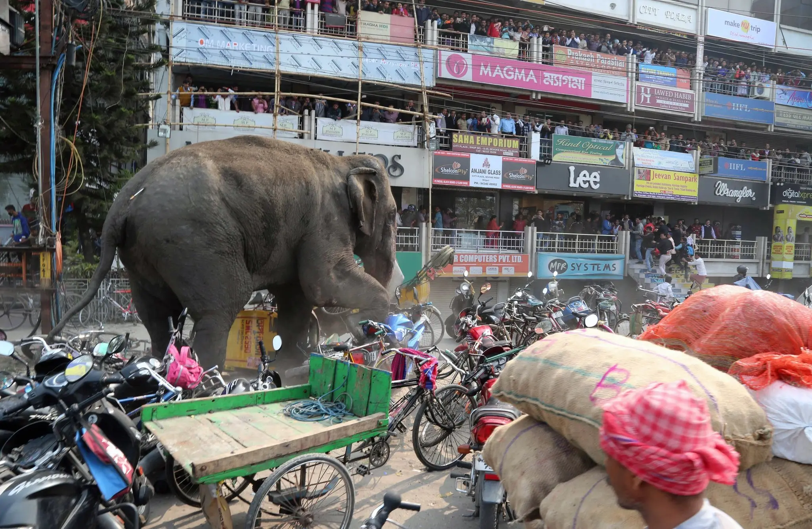
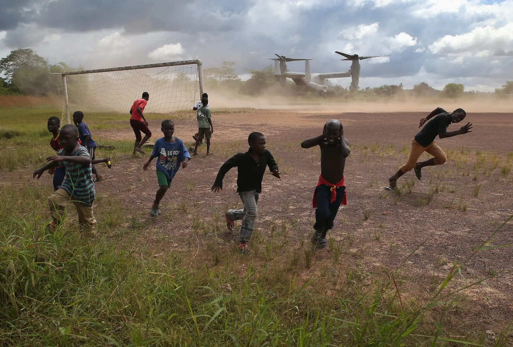

How to Read
a Photograph
A step-by-step guide to image analysis using a 5-stage visual inquiry framework.
Why Analyse Images?
A photograph is not a window onto reality — it is a constructed argument. Every frame excludes as much as it includes.
Photographers choose what to shoot, when, how, and for whom. Those choices carry ideology, power, and intent.
Images shape what we fear, who we trust, what we consider normal. Analysing them is not a literacy skill — it is a survival skill.
The 5-Step Framework
You will use these 5 steps with real photos today — have your analysis worksheet ready.
Vocabulary for
Image Description
What do
you see?
Before you guess what is happening — just describe what is literally in front of you.
- 👥Who or what is in the image? Describe the people, objects, animals.
- 📍Where are they? Describe the setting and background.
- 🎨What colours, lighting, and mood can you see?
- 🔍What is in the foreground? What is in the background?
- 📷Is anything unusual, unexpected, or out of place?
What do
you wonder?
Good analysts ask questions — not just about what they see, but about what they don't know.
- ❓What is happening that you cannot explain yet?
- 🗓️When do you think this photograph was taken?
- 🌍Where in the world might this be?
- 📸Who do you think took this photo — and why?
- 😶What are the people in the image thinking or feeling?
What is the
context?
Context is everything that surrounds the image — the time, place, and social situation it was taken in.
- 🗺️Where and when was this taken?
- 🏛️What social or political issues are shown?
- 📰Does this connect to a real event?
- 👤Who published or commissioned it — and for whom?
- 🎯How does context change what you see?
What is
actually
happening?
Combine your observations, questions, and context to build an evidence-based interpretation.
- 🔗How does what you see connect to the wider context?
- ⚖️What evidence supports your interpretation? Be specific.
- 🤔Could there be another reading? What might you be missing?
- 📊How reliable is this source? Could it be staged, cropped, or edited?
- 🗣️What language would you use to write about this formally?
How does the
image position
the viewer?
Move from description to ideology. What does this image want you to believe?
Framing
What is included — and excluded — from the shot?
Perspective
High angle = power over subject. Low angle = subject dominates.
Light & Shadow
Brightness = hope or heroism. Darkness = threat or despair.
Absence
What has been cropped out, left unnamed, or made invisible?
Gaze
Who looks at whom? Direct eye contact demands; averted gaze objectifies.
Symbolism
What objects, colours, or gestures carry meaning beyond the literal?
Audience
Who was this made for? How does that shape what is shown?
Normalisation
What does this image treat as ordinary that you should question?
The image positions the viewer to see as .
The photograph normalises / challenges by .
The framing makes it difficult to see , which serves .
Who Decides
What You See?
Emotional Engineering
Platforms don't show you what is most important. They show you what generates the most response — fear, outrage, grief, hope. Engagement is the metric. Truth is irrelevant to the algorithm.
The Pity Economy
Images of suffering travel furthest — if the subject is positioned as pitiable, not complex. Dignity that demands something back rarely goes viral. Helplessness does.
Algorithmic Visibility
Some images are amplified; others vanish. The decision is not editorial — it is structural. Who gets seen as a victim, a threat, or a hero is partly decided by engagement data.
Ask Before You Share
Whose suffering are you circulating — and what does clicking give you? Sharing an image is not neutral. It is participation in a system that decides whose pain has currency.

Image not found
VTS11-17-14LN-superJumbo.webp

Image not found
VTS02-22-16LN-superJumbo.webp

Image not found
VTS11-03-14LN-superJumbo.webp
Class Discussion
Test Your Reading
Which interpretation is most supported by specific visual evidence? Where does your reading break down?
Surface Your Assumptions
What did you bring to this image before you even looked? Who might read it completely differently — and why?
Follow the Power
What power structures appear invisible here? What has the photographer made impossible to see?
Writing
Task
Write a structured image analysis of 10–15 sentences across all 5 steps.
Use your worksheet notes · Full sentences only · 15 minutes
Describe what you can see in the image. Include people, objects, setting, mood, and composition. Use precise vocabulary.
Note what you do not yet understand. What is unexplained? What were you uncertain about before you knew the context?
Explain the context surrounding the image. When and where was this taken? What situation or issue does it relate to?
State what you believe is actually happening in the image. Use specific visual evidence from the photograph to support your claim.
Analyse how the image positions the viewer. What does it want you to feel or believe? Use specific techniques — framing, angle, light, absence — as evidence.
Key
Takeaways
Photographs are not windows — they are arguments. Every frame is a choice.
Absence is evidence. What is not shown matters as much as what is.
Context does not just explain an image — it transforms it. The same photograph means different things in different hands.
Strong analysis follows the power. Ask who benefits from this image existing — and what it makes harder to see.
Find a press photograph from a news website or history archive. Apply all 5 steps in writing. Then: identify one thing the image makes invisible. Bring your analysis to the next lesson — be ready to defend it.
English · Visual Literacy & Image Analysis